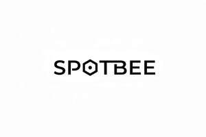

Trade Mark Journal No.2026/010 6 March 2026
UK00004341481 16 February 2026 (3,5,9,11,18,21,24,25,28,35)

- Class 3
- Deodorants and antiperspirants; Anti-perspirant deodorants; Roll-on deodorants [toiletries]; Antiperspirants; Body deodorants; Anti-perspirants; Body deodorants [perfumery]; Deodorant soap; Soap (Deodorant -); Deodorants for pets; Personal deodorants; Feminine deodorant sprays; Deodorants for the feet; Antiperspirants [toiletries]; Deodorants for animals; Antiperspirant soap; Soap (Antiperspirant -); Deodorants for personal use [perfumery]; Non-medicated antiperspirants; Aftershave lotions; After-shave lotions; Moisturisers [cosmetics]; Foot deodorant spray; Depilatory lotions; Anti-perspirants in the form of sprays; Suncare lotions; Deodorants for body care; Deodorants for personal use; Shaving lotions; Skin fresheners [cosmetics]; Suncare lotions [for cosmetic use]; Anti-perspirant preparations; Scented body lotions and creams; Aftershave creams; Aftershave balms; Aftershaves; Sunscreen lotions; Deodorants, for personal use in the form of sticks; Cosmetics in the form of lotions; After-shave creams; Shaving soaps; Colognes; Body creams [cosmetics]; Cosmetic creams and lotions; Scented body lotions; Moisturising creams, lotions and gels; After-shave balms; Aftershave gels; Shampoos; Perfumes; Skin moisturizers used as cosmetics; Douching preparations for personal sanitary or deodorant purposes [toiletries]; Moisturisers; Suntan lotion [cosmetics]; Tanning gels [cosmetics]; Aromatherapy lotions; Deodorant for personal use; Oils for perfumes and scents; Deodorants for human beings; Scented soaps; Non-medicated lotions; Skincare cosmetics; Anti-aging moisturizers used as cosmetics; Body gels [cosmetics]; Shaving lotion; Depilatories; Shaving balms; Scented body creams; Sun-tanning creams and lotions; Non-medicated hair lotions; Cosmetic moisturisers; Cleansing lotions; Toothpastes; Deodorant preparations for personal use; Fragrances; Depilatory creams; Hair lotions; Sun-block lotions; Sunscreen creams [for cosmetic use]; Tanning oils [cosmetics]; Cosmetic hair lotions; Soaps and gels; Non-medicated skin lotions; Non-medicated shampoos; Lotions for beards; Shaving sprays; Cosmetic foams containing sunscreens; Sunscreens; Moisturizers; Skin fresheners; Non-medicated cosmetics and toiletry preparations; Cosmetic skin fresheners; Bathing lotions; Moisturizing body lotions; Facial creams [cosmetics]; Shaving creams; After-sun oils [cosmetics]; Skin lotions; Lotions for the skin; Sunscreen creams; Antiperspirants for personal use; Cosmetic products in the form of aerosols for skincare; Suntan oils [cosmetics]; Vaginal washes for personal sanitary or deodorant purposes; Beauty lotions; Non-medicated cosmetics; Non-medicated moisturisers; Sunscreens [for cosmetic use]; Natural oils for perfumes; Pre-shave creams; Perfumed body lotions [toilet preparations]; Moisturising skin lotions [cosmetic]; Acne cleansers, cosmetic; Fluid creams [cosmetics]; Cosmetics; Body shampoos; Non-medicated toothpaste; Facial gels [cosmetics]; Cosmetic soaps; Cosmetic suntan lotions; Soap products; Liquid perfumes; Body and facial creams [cosmetics]; Waterless shampoos.
- Class 5
- Deodorants for clothing; Deodorants for refrigerators; Deodorants for textiles; Bathroom deodorants; Toilet deodorants; Refrigerator deodorants; Deodorants for upholstery; Car deodorants; Deodorants for clothing and textiles; Clothing (Deodorants for -) and textiles; Textiles (Deodorants for clothing and -); Medicated after-shave lotions; Pharmaceutical skin lotions; Alcohol-based antibacterial skin sanitizer gels; Medicated and sanitising soaps and detergents; Antibacterial hand lotions; Acne cleansers [pharmaceutical preparations]; Antibacterial sprays.
- Class 9
- Three dimensional viewers; Ph meters; Engine hour meters; Volt meters; Digital pH meters; Volt metres; Point Of Sale [POS] systems; Step up transformers; Ampere-hour meters; 3D glasses; CD players; Meters; PC mice; Benzine meters; Decibel meters; Micrometers; Humidity meters; 3D television receivers; Brackets for setting up flat screen TV sets; CB radios; Level meters; 3D Scanners; CD burners; Handheld CD players; System on a Chip [SoC]; System on Chip [SOC]; PC cards; PH electrodes; Portable CD players; Speed meters; Turbine meters; Acoustic meters; Graduated rulers; Liquid level meters; Science sets for children being teaching apparatus; Lap Top computers; Science sets for children being instructional apparatus; Retail software.
- Class 11
- Electric dispensers for room deodorants.
- Class 18
- Sports [Bags for -]; Cat o' nine tails; Rucksacks on castors; Roller suitcases; School book bags; Bags for school; School bags; School knapsacks; Randsels [Japanese school satchels]; School backpacks; Satchels (School -); School satchels; Evening bags; Gym bags.
- Class 21
- Articles for the care of clothing and footwear.
- Class 24
- Quilts filled with half down.
- Class 25
- Plus fours; Sports [Boots for -]; Pants (Am.); Coats (Top -); Top coats; Night shirts; Pajamas (Am.); Intermediate soles; Basic upper garment of Korean traditional clothes [Jeogori]; Articles of clothing; Articles of sports clothing; Foulards [clothing articles]; Clothing; Articles of outer clothing; Articles of clothing made of leather; Articles of clothing for theatrical use; Parts of clothing, footwear and headgear; Garments for protecting clothing; Clothing for sports; Sports clothing; Articles of underclothing; Jackets being sports clothing; Jackets (Stuff -) [clothing]; Stuff jackets [clothing]; Maternity clothing; Knitwear [clothing]; Gloves [clothing]; Gloves as clothing; Articles of clothing made of hides; Men's clothing; Jackets [clothing]; Paper hats for use as clothing items; Layettes [clothing]; Clothing layettes; Ready-to-wear clothing; Jerseys [clothing]; Clothing for leisure wear; Clothing for babies; Leisure clothing; Woolen clothing; Corsets [clothing, foundation garments]; Clothing for children; Footwear [excluding orthopedic footwear]; Leather (Clothing of -); Leather clothing; Clothing of leather; Footwear; Furs [clothing]; Headbands [clothing]; Headbands for clothing; Sports garments; Clothing for wear in wrestling games; Clothes for sports; Gabardines [clothing]; Clothing for cycling; Denims [clothing]; Tips for footwear; Footwear (Tips for -); Knitted clothing; Mitts [clothing]; Clothing for gymnastics; Sports clothing [other than golf gloves]; Clothing for infants; Chaps (clothing); Athletic clothing; Casual clothing; Cashmere clothing; Triathlon clothing; Braces for clothing; Playsuits [clothing]; Sports footwear; Anti-perspirant socks.
- Class 28
- Gym balls for yoga; Nine man's morris sets; Starting blocks for swimming; Starting blocks for sports; Starting blocks [for track sports]; Starting blocks for track sports; Teeball sets.
- Class 35
- Retail services in relation to beer; Business management of wholesale and retail outlets; Retail services in relation to coffee; Unmanned retail store services relating to food; Retail store services in the field of clothing; Retail services in relation to vehicles; Online retail store services in relation to clothing; Shop retail services connected with carpets; Retail services in relation to furnishings; Retail services in relation to homeware; Retail services in relation to furniture; Retail services relating to food; Retail services in relation to bakery products; Retail services in relation to saddlery; Business management of retail outlets; Unmanned retail store services relating to drink; Retail service connected with the sale of vehicles via a dealership; Retail services in relation to seafood; Retail services in relation to heaters; Retail services in relation to clothing; Retail services in relation to pet products; Retail services in relation to lubricants; Mail order retail services for clothing; Retail services connected with the sale of furniture; Retail services in relation to desserts; Retail services in relation to lighting; Online retail store services relating to clothing; Retail services in relation to footwear; Retail services in relation to confectionery; Retail services connected with stationery; Retail services in relation to smartphones; Retail services relating to bakery products; Mail order retail services for cosmetics; Retail services relating to furniture; Retail services in relation to cookware; Retail services in relation to tobacco; Retail services in relation to horticulture products; Retail services in relation to gardening products; Retail services in relation to games; Retail services in relation to car accessories; Retail services in relation to tableware; Retail services relating to delicatessen products; Retail services in relation to sorbets; Retail services in relation to meats; Retail services in relation to fuels; Retail services in relation to sanitary installations; Retail services in relation to toiletries; Retail services in relation to luggage; Retail services in relation to jewellery; Retail services in relation to educational supplies; Retail services in relation to cutlery; Retail services in relation to chocolate; Online retail services relating to clothing; Business management for freelance service providers; Retail services in relation to smartwatches; Retail services in relation to computer hardware; Retail services in relation to safes; Retail services in relation to horticulture equipment; Retail services in relation to teas; Retail services in relation to fabrics; Retail services in relation to yarns; Retail services in relation to bicycles; Retail services in relation to toys; Retail services in relation to bags; Retail services in relation to headgear; Retail services for computer software; Retail services relating to clothing; Retail service connected with the sale of power tools via a distributorship; Retail services in relation to heating equipment; Online retail services relating to jewelry; Retail shop window display arrangement services; Retail services in relation to freezing equipment; Retail services relating to jewelry; Retail services in relation to cocoa; Retail services in relation to dairy products; Retail services in relation to mobile phones; Online retail services relating to luggage; Retail services in relation to domestic electronic equipment; Mail order retail services related to beer; Retail services in relation to domestic electrical equipment; Retail services relating to batteries; Retail services in relation to diving equipment; Online retail services relating to cosmetics; Retail services in relation to construction equipment; Retail services in relation to sanitation equipment; Retail services in relation to stationery supplies; Retail services in relation to cooling equipment; Retail services in relation to agricultural equipment; Retail services in relation to bicycle accessories; Retail services in relation to weapons; Retail services in relation to paints; Administration of the business affairs of retail stores; Retail services in relation to metal hardware; Retail services in relation to umbrellas; Retail services relating to horticultural products; Retail services in relation to sporting equipment; Retail services in relation to foodstuffs; Retail services in relation to fashion accessories; Retail services relating to fruit; Retail services in relation to hair products; Retail services in relation to food cooking equipment; Online retail store services relating to cosmetic and beauty products; Mail order retail services for clothing accessories; Online retail services relating to toys; Retail services in relation to cleaning preparations; Retail services in relation to earthmoving equipment; Retail services in relation to computer software; Retail services in relation to refrigerating equipment; Retail services relating to horticultural equipment; Retail services in relation to downloadable virtual footwear; Retail services in relation to physical therapy equipment; Retail services in relation to veterinary apparatus; Retail services in relation to audio-visual equipment; Retail services in relation to cleaning articles; Retail services relating to candy; Retail services in relation to downloadable virtual clothing; Retail services in relation to threads; Retail services in relation to pushchairs; Online retail services for downloadable virtual clothing; Retail services in relation to veterinary preparations; Sales management services; Retail services relating to automobile accessories; Retail services in relation to downloadable virtual headwear; Retail services relating to flowers; Retail services in relation to clothing accessories; Retail services in relation to wearable computers; Automatic re-ordering service for business; Retail services in relation to kitchen appliances; Retail services in relation to building materials; Online retail services in relation to downloadable virtual clothing; Business management for a trade company and for a service company; Retail services connected with the sale of clothing and clothing accessories; Wholesale services relating to clothing; Wholesale services in relation to clothing; Advertising services relating to clothing; Wholesale services in relation to sewing articles.
Spotbee Limited